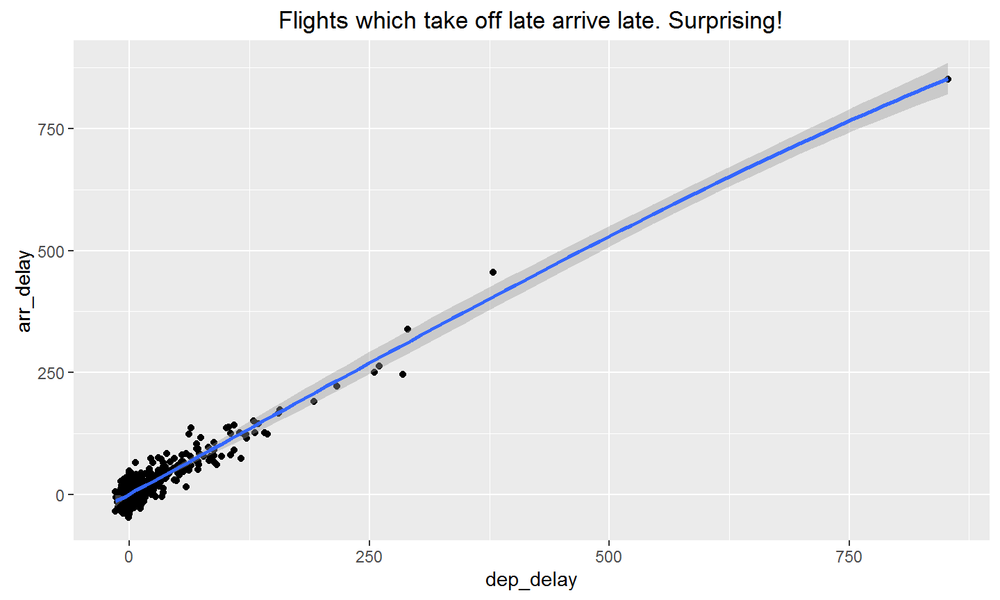
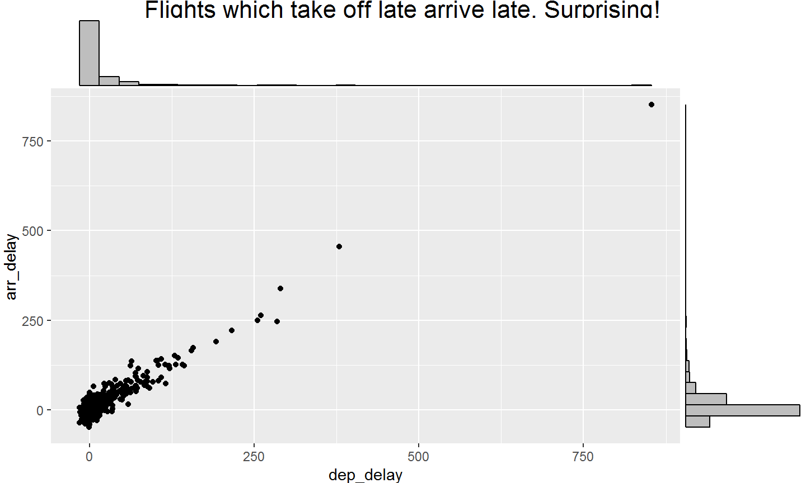

- for 5 of you:
- Data visualization
- for 4 of you:
- Fast code (via C++)
- for 3 of you:
- Use of out-of-RAM matrices (Big Data)
- Interactive plots
- Interactive apps (Shiny)
- Some features of RStudio (THE IDE of R)
2016-09-11
What 9 of you wanted to learn
- for 2 of you:
- Some stats/analytics about the growth/use of R
- Statistic models
- Fast code (via tips such as vectorization)
- Manipulation of datasets
- comment créer un projet propre sous R, destiné a devenir un package
- ggplot
- for 1 of you:
- Parallel computing
- Where to go to learn R
- plutot une presentation générale des fonctionnalités, de la syntaxe + interaction avec python !
Some facts about the growth of R:
- R is #5 of all programming languages (IEEE Spectrum, July 2016)
- There are now 9140 available packages on CRAN (CRAN: Contributed Packages, 2016-09-11)
- There are many R conferences:
- useR!: 900+ people in 2016,
- eRum: european R users meeting,
- EARL: many people from the Industry,
- Rencontres R: Grenoble in 2015,
- satRdays,
- R/Finance & R in Insurance.
- The R blogosphere is huge: R-bloggers has
- nearly 600 bloggers,
- 36K followers on Twitter,
- 39K on Facebook,
- very interesting posts every day!
Manipulating data? Ask Hadley Wickham!
R packages that he has developped (from his website):
- Data import
- Software engineering
Introduction to dplyr (from its vignette)
library(nycflights13) dim(flights) [1] 336776 19 head(flights) # A tibble: 6 x 19 year month day dep_time sched_dep_time dep_delay arr_time <int> <int> <int> <int> <int> <dbl> <int> 1 2013 1 1 517 515 2 830 2 2013 1 1 533 529 4 850 3 2013 1 1 542 540 2 923 4 2013 1 1 544 545 -1 1004 5 2013 1 1 554 600 -6 812 6 2013 1 1 554 558 -4 740 # ... with 12 more variables: sched_arr_time <int>, arr_delay <dbl>, # carrier <chr>, flight <int>, tailnum <chr>, origin <chr>, dest <chr>, # air_time <dbl>, distance <dbl>, hour <dbl>, minute <dbl>, # time_hour <time>
require(dplyr)
Dplyr aims to provide a function for each basic verb of data manipulation:
filter()(andslice())arrange()select()(andrename())distinct()mutate()(andtransmute())summarise()sample_n()(andsample_frac())
filter(flights, month == 1, day == 1)
# A tibble: 842 x 19
year month day dep_time sched_dep_time dep_delay arr_time
<int> <int> <int> <int> <int> <dbl> <int>
1 2013 1 1 517 515 2 830
2 2013 1 1 533 529 4 850
3 2013 1 1 542 540 2 923
4 2013 1 1 544 545 -1 1004
5 2013 1 1 554 600 -6 812
6 2013 1 1 554 558 -4 740
7 2013 1 1 555 600 -5 913
8 2013 1 1 557 600 -3 709
9 2013 1 1 557 600 -3 838
10 2013 1 1 558 600 -2 753
# ... with 832 more rows, and 12 more variables: sched_arr_time <int>,
# arr_delay <dbl>, carrier <chr>, flight <int>, tailnum <chr>,
# origin <chr>, dest <chr>, air_time <dbl>, distance <dbl>, hour <dbl>,
# minute <dbl>, time_hour <time>
arrange(flights, desc(dep_delay))
# A tibble: 336,776 x 19
year month day dep_time sched_dep_time dep_delay arr_time
<int> <int> <int> <int> <int> <dbl> <int>
1 2013 1 9 641 900 1301 1242
2 2013 6 15 1432 1935 1137 1607
3 2013 1 10 1121 1635 1126 1239
4 2013 9 20 1139 1845 1014 1457
5 2013 7 22 845 1600 1005 1044
6 2013 4 10 1100 1900 960 1342
7 2013 3 17 2321 810 911 135
8 2013 6 27 959 1900 899 1236
9 2013 7 22 2257 759 898 121
10 2013 12 5 756 1700 896 1058
# ... with 336,766 more rows, and 12 more variables: sched_arr_time <int>,
# arr_delay <dbl>, carrier <chr>, flight <int>, tailnum <chr>,
# origin <chr>, dest <chr>, air_time <dbl>, distance <dbl>, hour <dbl>,
# minute <dbl>, time_hour <time>
mutate(flights, gain = arr_delay - dep_delay, speed = distance / air_time * 60)
# A tibble: 336,776 x 21
year month day dep_time sched_dep_time dep_delay arr_time
<int> <int> <int> <int> <int> <dbl> <int>
1 2013 1 1 517 515 2 830
2 2013 1 1 533 529 4 850
3 2013 1 1 542 540 2 923
4 2013 1 1 544 545 -1 1004
5 2013 1 1 554 600 -6 812
6 2013 1 1 554 558 -4 740
7 2013 1 1 555 600 -5 913
8 2013 1 1 557 600 -3 709
9 2013 1 1 557 600 -3 838
10 2013 1 1 558 600 -2 753
# ... with 336,766 more rows, and 14 more variables: sched_arr_time <int>,
# arr_delay <dbl>, carrier <chr>, flight <int>, tailnum <chr>,
# origin <chr>, dest <chr>, air_time <dbl>, distance <dbl>, hour <dbl>,
# minute <dbl>, time_hour <time>, gain <dbl>, speed <dbl>
flights2 <- flights %>%
filter(month == 1, day == 1) %>%
arrange(desc(dep_delay)) %>%
mutate(gain = arr_delay - dep_delay,
speed = distance / air_time * 60)
head(flights2)
# A tibble: 6 x 21 year month day dep_time sched_dep_time dep_delay arr_time <int> <int> <int> <int> <int> <dbl> <int> 1 2013 1 1 848 1835 853 1001 2 2013 1 1 2343 1724 379 314 3 2013 1 1 1815 1325 290 2120 4 2013 1 1 2205 1720 285 46 5 2013 1 1 1842 1422 260 1958 6 2013 1 1 2115 1700 255 2330 # ... with 14 more variables: sched_arr_time <int>, arr_delay <dbl>, # carrier <chr>, flight <int>, tailnum <chr>, origin <chr>, dest <chr>, # air_time <dbl>, distance <dbl>, hour <dbl>, minute <dbl>, # time_hour <time>, gain <dbl>, speed <dbl>
Elegant visualization tools: ggplot2
require(ggplot2)
p <- qplot(dep_delay, arr_delay, data = flights2,
main = "Flights which take off late arrive late. Surprising!")
print(p)

Adding layers
p + geom_smooth()

More: go check this book
citation("ggplot2")
To cite ggplot2 in publications, please use:
H. Wickham. ggplot2: Elegant Graphics for Data Analysis.
Springer-Verlag New York, 2009.
A BibTeX entry for LaTeX users is
@Book{,
author = {Hadley Wickham},
title = {ggplot2: Elegant Graphics for Data Analysis},
publisher = {Springer-Verlag New York},
year = {2009},
isbn = {978-0-387-98140-6},
url = {http://ggplot2.org},
}
Some extensions are available here
ggExtra::ggMarginal(p, type = "histogram")

ggmap: maps with ggplot2
Interactive visualizations tools: plotly
plotly::ggplotly(p)
Interactive apps: Shiny
Live demo!
- From the Shiny website
- My own shiny app:
shiny::runGitHub("privefl/repartitions_equipes") - A game: Lights Out
Use of C++ code when needed
Bigmemory
- On-disk matrices
- types:
char,short,int,float,double - Access with
[i, j]as a matrix - Access via C++ code with
[j][i] - Easy use of parallelisation with shared matrices
Example with foreach and bigmemory
- Say you have:
- A SNP big.matrix X stored on-disk in directory backingfiles,
- Infos on the positions of the SNPs (the first 40,000 SNPs are in chromosome 1, then 38,000 are in chromosome 2, etc.),
- And you have to do some computations which are independent with respect to chromosomes. You want to use Parallel Computing!
- How to do use Parallel Computing on massive genotype matrices?
DO_all <- function(X, infos, ncores) {
DO_chr <- function(X.desc, lims) {
X.chr <- sub.big.matrix(X.desc,
firstCol = lims[1],
lastCol = lims[2],
backingpath = "backingfiles")
## Do something with X.chr (such as imputing)
}
range.chr <- LimsChr(infos)
X.desc <- describe(X)
obj <- foreach(chr = 1:nrow(range.chr),
.packages = "bigmemory")
expr_fun <- function(chr) {
DO_chr(X.desc, range.chr[chr, ])
}
res <- foreach2(obj, expr_fun, ncores)
}
LimsChr <- function(infos) {
map.rle <- rle(infos$map$chromosome)
upper <- cumsum(map.rle$length)
lower <- c(1, upper[-length(upper)] + 1)
cbind(lower, upper, "chr" = map.rle$values)
}
foreach2 <- function(obj, expr_fun, ncores) {
if (is.seq <- (ncores == 1)) {
foreach::registerDoSEQ()
} else {
cl <- parallel::makeCluster(ncores)
doParallel::registerDoParallel(cl)
}
res <- eval(parse(
text = sprintf("foreach::`%%dopar%%`(obj, expr_fun(%s))",
obj$argnames)))
if (!is.seq) parallel::stopCluster(cl)
return(res)
}
We have RStudio
Live demo!
- Code highlighting/autocompletion
- Help > Cheatsheets
- Panels (Git, …)
- debugger
- Notebooks
More tips: RStudio Tips on Twitter
Free books to learn about R:
- Advanced R programming:
- Reporting:
- Data analysis:
- Package development:
Learn: R Course Finder